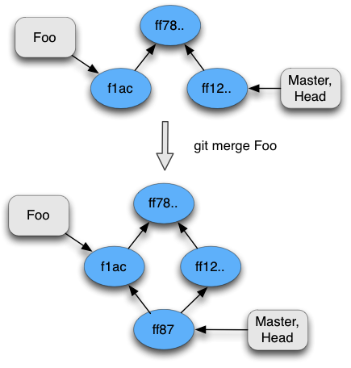
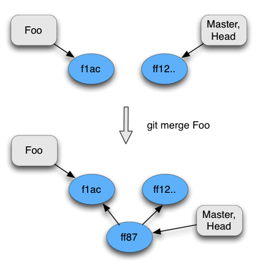
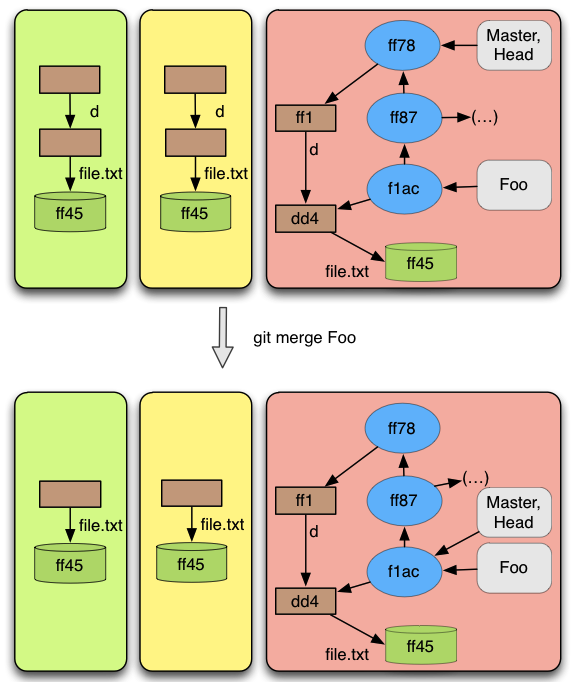
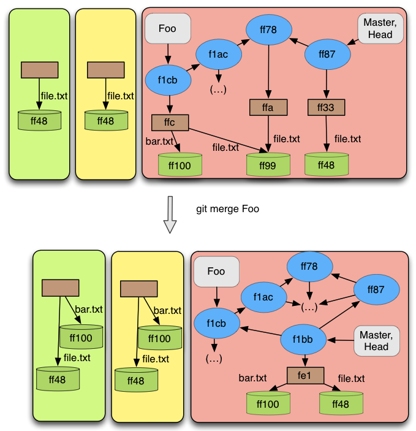

Description
The merge operation is one the of most important operation in Git. It consists on trying to combine information from two commits. The result of that is a new commit with information from both commits. However there are some cases where this is not true. One of this cases is when the current commit is a precedent from the commit being merged. In this case, it is not created a new commit. The current branch (identified by HEAD) is updated to point to the commit being merged.
Sometimes this operation of joining commits is not possible to do automatically because there are conflicts, or in other words, when the same file exists in both commits it is not possible to say which one is more recent. In this case the merge operation has to be finished by the user. The user has to resolve the conflicts and then perform a commit.
Git tries to be as most autonomous as possible when merging. Thus, it has three types of merge:
Fast-forward merge (figure 13): It happens when the commit being merged is accessible from the current commit by the parent relation. If that happens, then the commit being merged is more recent than the current commit. The result will be the HEAD pointing to the commit being merged. A new commit is not created;
3-way merge (figure 14): It happens when a fast-forward is not possible, but both commits have a common ancestor. Git will use the common ancestor to minimize potential merge conflicts.
2-way merge (figure 15): It happens when there is no common ancestor, thus it will be more likely that conflicts will appear.
Figure 13
 Figure 14
 Figure 15
Pre-conditions
The merge operation, as all other operations, has some pre conditions that must be satisfied in order to be performed. As in the checkout operation, Git lets the user to perform a merge without all information in the index being committed:
A merge cannot be performed if the current commit is more recent than the commit being merged. As the current commits is more recent, no changes would exist.
There cannot exist an unfinished merge on the repository. If the user performed a merge previously and that merge was not automatic, then a commit must be performed before performing a new merge.
When it is detected that the fast-forward merge will take place, the index cannot have uncommitted files that would would conflict with files from the resulting merge.
When it is detected that a 2-way or 3-way merge will take place, then uncommitted files cannot exist in the index.
If it is the case of a fast-forward merge, the index and the working directory will contain the information of the newest commit. Also, they will contain all information prior to the merge that was uncommitted, as long as there are no conflicts. Of course, the current branch and HEAD will point to the newest commit.
When it is a 2-way or 3-way automatic merge, the index and the working directory will reflect the new commit (the created commit). Here, the question of uncommitted changes does not exists because git does not allow uncommitted files when applying these tactics. In the repository a new commit is created that has the combined changes of the two (possibly three, if it is a 3-way merge) commits involved in the merge . That new commit will have as parents those two commits and it will be pointed by the branch identified by the HEAD.
If when performing a merge, it cannot be performed automatically, Git will throw a message saying that the automatic merge failed and the user has to finish it. In other words it leaves to the user the work of resolving the conflicts that git could not resolve. At that moment, the index and working directory will contain all the files that were merged. The working directory will also contain the unmerged files, with marks for the user to solve the conflicts. The index contains the 2 (or 3 in the case of a 3-way merge) versions of the files. As soon as the user solves the conflicts and adds it to the index, this file will be marked as merged. After all files are merged , a commit can be performed. In this manual process, git keeps somewhere in the repository that a manual merge is taking place and it also keeps which commits are being merged. This information is used when the commit operation is performed, mainly to know which commits will be the parent from the created one.
Result
As already said when performing a merge, one of three tactics can be applied. In the case of a fast-forward merge, the operation will be always automatic. It means that no conflicts will ever be found. In the case of a 2-way merge or 3-way merge, the merge operation sometimes cannot be resolved automatically because conflicts are found. Next, we give a small description of what changes after a merge operation is called.
Examples
As usual the next figures will show some concrete examples of what happens in git when a merge is done. We do not involve here cases of uncommitted files, as we do not recommend that and it would turn much more tricky to understand and much less intuitive.
Figure 16 is a simple case of a merge operation with the branch ”Foo”. The figure shows that the Master branch (which is identified by HEAD) points to a commit that is accessible by the commit pointed by ’Foo’ by the parent relation. So this is a case eligible for a fast-forward commit. We can see that the result is that the working directory and index will be updated accordingly to the new created commit now pointed by ’Foo’ and Master.
 Figure 16
Figure 17 shows a concrete example of a state in which it is not possible to perform a merge. This happens because the commit pointed by Master (which is identified by HEAD) takes precedence over all files.
 Figure 17
Figure 17
Figures 18,19 demonstrates the difference between a 2-way and a 3-way merge commit. When using 2-way merge there are conflicts that cannot be solved automatically, in the 3-way merge the conflicts are resolved automatically by looking at the common ancestor. Because the 3-way merge was automatic , a new commit was created that represents the merged information. Also, the working directory and index were updated accordingly. In the 2-way merge the system is left in a state for the user to solve the conflicts manually by updating the unmerged files and adding it to the index. Finally, when ’git commit’ is performed a new merge commit is created and the merge process terminates.
Figure 18
 Figure 19